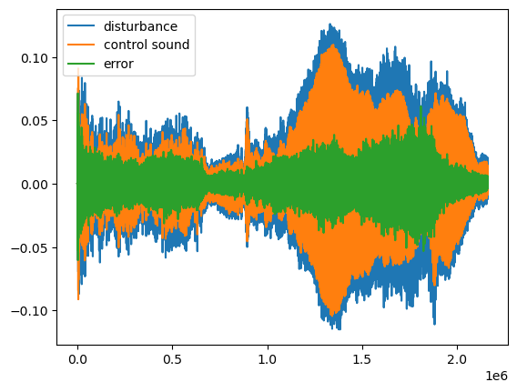

Single-channel control
Feedforward FxLMS, block and notch variants, modified and leaky adaptation, and harmonic control.
Browse notebooks ↗02 / Active noise control
A collection of Python notebooks for studying active noise control through simulated acoustic paths and adaptive algorithms.
I built this independent study in 2026. The implementations draw mainly on Stephen J. Elliott's 2001 book Signal Processing for Active Control and selected research papers.
Overview
01Rising transport and industrial noise in densely populated cities is a growing concern. Long-term exposure is associated with sleep disruption, reduced cognitive performance and cardiovascular risk, creating a need for ways to reduce unwanted sound.
An active noise control system uses one or more loudspeakers to generate a secondary sound field that interferes destructively with a disturbance. An error microphone measures the residual sound at the target location, and the controller adapts the anti-noise signal to minimize the measured sound pressure.
Advances in digital processing make adaptive ANC increasingly practical. Real-time computational cost remains a constraint, especially as the number of channels grows.
Context: Tan & Lau (2024) ↗ · Sachau & Karl (2026) ↗
These notebooks let me explore how ANC systems work through adaptive filtering, acoustic path modeling, real-time processing considerations, and the choice of algorithm parameters. They are educational implementations and adaptations, rather than reproductions of published experiments.
Inside the library
Feedforward FxLMS, block and notch variants, modified and leaky adaptation, and harmonic control.
Browse notebooks ↗Multiple references, actuators and error microphones, with time- and frequency-domain experiments and tonal control.
See feedforward FxLMS ↗Offline identification and online modeling, including simultaneous modeling and control adapted from various research papers.
See SMC experiment ↗Research process
03I built this library out of curiosity about what makes ANC algorithms work. Understanding them meant going beyond the update equations: I had to study adaptive filtering, acoustic paths, causality, and the choices that determine whether an implementation converges.
The work moves between reading, implementation and simulation. I used the notebooks to test the behavior described in the literature, change parameters and configurations, and investigate results that did not behave as expected. That process reflects how I approach a technical subject: work through its foundations, implement the method, and check what the results actually show.
The main references were Widrow and Stearns's Adaptive Signal Processing (1985) ↗, Elliott's Signal Processing for Active Control (2001) ↗, and Sachau and Karl's review of fifteen years of ANC research on partially open windows ↗. Individual notebooks cite the papers behind their specific algorithms.
Simulation example
This notebook adapts the feedforward concept from Karl and Sachau (2024) to a simulated direct-sound room. The disturbance is a heavy vehicle passing by. The plot shows the disturbance, control sound and residual error; the audio compares the signal at the error microphone with and without ANC.

Listen · 30–45 s excerpt
Both recordings use the same simulated error-microphone position and playback gain. Switch between them to hear the effect of the feedforward controller.
Open the feedforward notebook ↗These are simulated renders, not recordings from a physical ANC installation. The room model includes direct sound only (max_order=0), and the step size was adjusted experimentally for this stimulus.
Code and references
The README indexes the notebooks and sources, and the notebook introductions explain each experiment. There is no separate paper for this independent study.